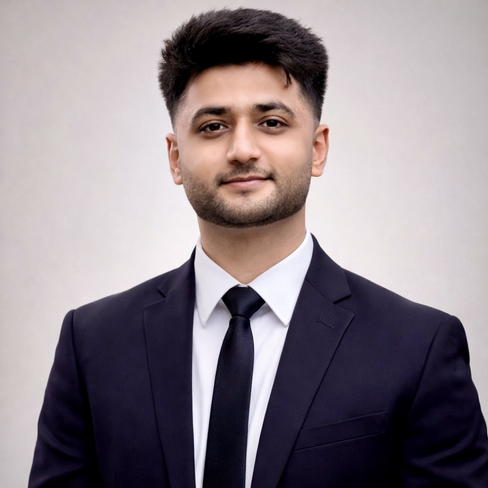
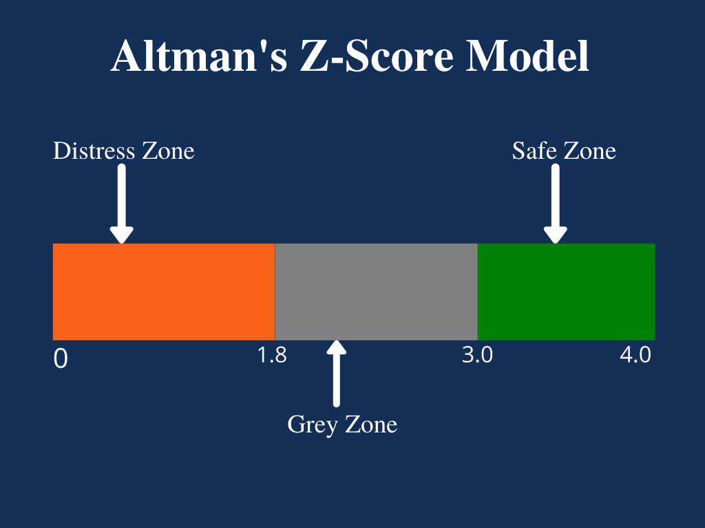
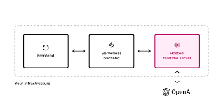
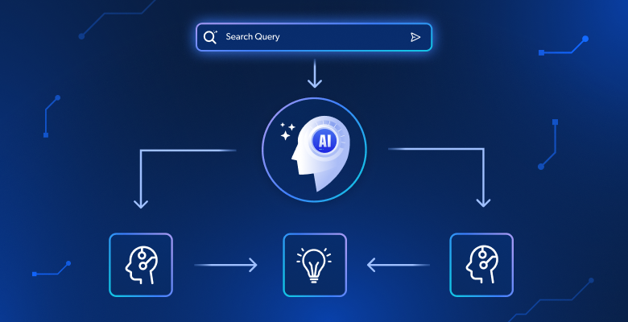

AI Engineer • Production ML • Computer Vision
AI Engineer with production experience building machine learning systems and deep learning models. MSc Applied Artificial Intelligence (Distinction). Experienced in ML pipelines, deployment, computer vision and RAG systems.
Download CV GitHub
Kumail Haider
AI Engineer based in London

Computer vision framework transforming financial ratios into image sequences and modelling temporal evolution with RAFT optical flow.
Tech: PyTorch • OpenCV • CNN • RAFT • Python
View Code →
Predictive models deployed in production improving engagement outcomes and automating marketing workflows.
Tech: Python • Scikit‑learn • Pandas • REST APIs
View Code →
Retrieval‑augmented AI system analysing career data and generating insights using LLM pipelines.
Tech: LLM • RAG • FastAPI • Docker
View Code →Research project transforming financial statements into visual representations and analysing temporal patterns using optical flow techniques.
Email: kumailhaiderid@gmail.com
LinkedIn: https://linkedin.com/in/kumail-sp
GitHub: https://github.com/kumail-sp